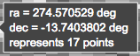
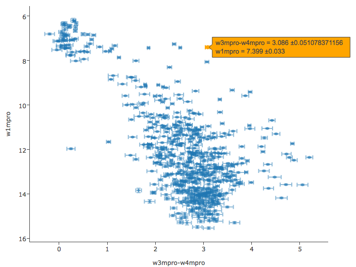
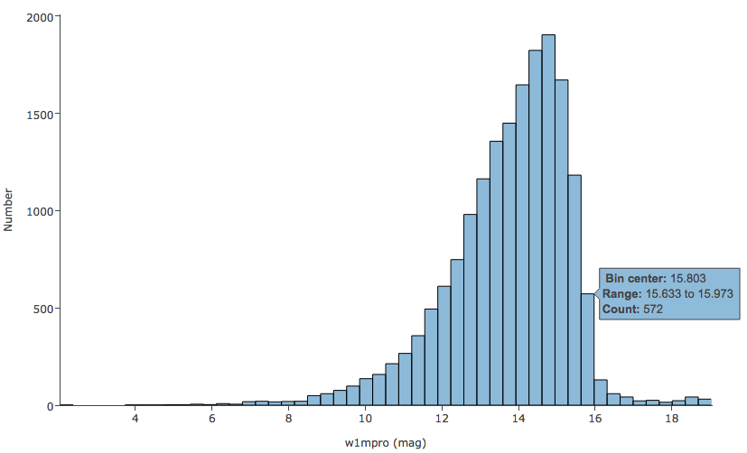

Contents of page/chapter:
+Catalogs from IRSA -- Overlaying catalogs
from IRSA
+Catalogs from disk -- Overlaying your own
catalogs
+Catalogs from VO -- Overlaying
catalogs obtained via the VO
+Catalog from NED -- Overlaying
catalog from NED
+Interacting with Tables
+Columns and Filters in Tables
+Plotting catalogs -- Default Plots
+Plotting catalogs -- Additional Plots
+Examples of catalog plots
The upper left of this window is where you specify which catalog you
want to search. To change catalogs, first select the "project" under
which they are housed at IRSA, such as 2MASS, IRAS, WISE, MSX, etc.
The available choices under the "category" and the specific clickable
catalog change according to the project you have selected. A short
description is provided for each of the catalogs, with links for more
information (including definitions of the sometimes cryptic column
names); an example is here:

The upper right of this window is where you specify the target (the position is pre-filled with its best guess as to what you want) and the search method (cone, elliptical, box, polygon, multi-object, all-sky), and the parameters that go with that search method (e.g., the radius of the cone). The parameters for each of these searches change dynamically as you select search options, as follows:
 It has guessed what position you want,
based on prior searches. You specify the cone radius.
It has guessed what position you want,
based on prior searches. You specify the cone radius.
 It has guessed what position you want,
based on prior searches. You specify the search ellipse's semi-major
axis, position ratio, and axial ratio.
It has guessed what position you want,
based on prior searches. You specify the search ellipse's semi-major
axis, position ratio, and axial ratio.
 It has guessed what position you want,
based on prior searches. You specify the box's length on a side.
It has guessed what position you want,
based on prior searches. You specify the box's length on a side.
 Now, note that it no longer has a
single target location. It has pre-filled the vertices of the position it
thinks you want, based on prior searches. You can select whether you
want the catalog request to match the entire area of the image you
have selected ("image"), or just the portion of the image you can see
in the current view ("visible"), or your own ("custom") area. The list
of vertices in the coordinates box are in decimal RA and Dec in
degrees. You must enter at least 3 and at most 15 vertices, separated
by a comma. Note that, for overlaying catalogs on HiPS images, you
cannot select "image", because HiPS images are generally very, very
large, so this would result in too many points being returned. There
is a maximum of 5 degrees imposed on catalog searches to match HiPS
images.
Now, note that it no longer has a
single target location. It has pre-filled the vertices of the position it
thinks you want, based on prior searches. You can select whether you
want the catalog request to match the entire area of the image you
have selected ("image"), or just the portion of the image you can see
in the current view ("visible"), or your own ("custom") area. The list
of vertices in the coordinates box are in decimal RA and Dec in
degrees. You must enter at least 3 and at most 15 vertices, separated
by a comma. Note that, for overlaying catalogs on HiPS images, you
cannot select "image", because HiPS images are generally very, very
large, so this would result in too many points being returned. There
is a maximum of 5 degrees imposed on catalog searches to match HiPS
images.
 In this case, it has not attempted
to guess what position you want. You need to upload a file in IPAC table format
In this case, it has not attempted
to guess what position you want. You need to upload a file in IPAC table format When you do a multi-position search on catalogs, three new columns are added to the catalog as it is returned to you. These columns are :
 Because this is an all-sky search, it
does not have a single target entry box. In order to constrain this
search, you need to impose constraints on the bottom of the screen
(see below).
Because this is an all-sky search, it
does not have a single target entry box. In order to constrain this
search, you need to impose constraints on the bottom of the screen
(see below).
Click on "Search" to initiate the search. It will load the catalog into a tab of its own. The objects will also be overlaid on any images you have loaded, and a default x-y plot will be shown. (For more on the x-y plots, see below.) All of these representations are interlinked -- clicking on a row in the table shows it on the image and in the plot, and clicking on an object in the image shows it in the table and in the plot, and clicking on an object in the plot shows it in the table and on the image.
To close the catalog search window without searching for a catalog, click on "Cancel".
Tips and Troubleshooting.
By clicking on the blue "Catalogs" tab, you are by default dropped into the interface for searching for catalogs at IRSA. However, you can pick another tab from the top, "Load Catalog", to load your own catalog, either from disk or from the IRSA Workspace.
Your catalog needs to be in IPAC table format  , which is a varietal of plain
text. IRSA has a table reformatting and validation service
, which is a varietal of plain
text. IRSA has a table reformatting and validation service  which
may be helpful, or you can download just about any catalog you find
through IRSA, and mimic that format.
which
may be helpful, or you can download just about any catalog you find
through IRSA, and mimic that format.
Your table file MUST have RA and Dec values, and unless it is specified, it assumes J2000.
You can add a "SYMBOL" parameter to change the shape (X, SQUARE, CROSS, EMP_CROSS, DIAMOND, DOT) of catalog marks, e.g.:
\SYMBOL = X
You can add a "DEFAULT_COLOR" parameter to assign a CSS color name or a HEX value to catalog marks, e.g., either of these two:
\DEFAULT_COLOR = lightcyan \DEFAULT_COLOR = #00FF00You can find the CSS color code or the CSS color HEX values
By clicking on the blue "Catalogs" tab, you are by default dropped into the interface for searching for catalogs at IRSA. However, you can pick another tab from the center right, "VO Catalog", to search for and load catalogs from the VO.

As for the IRSA catalog search, the tool pre-fills the target position with the coordinates of the target with which you have been working. In this case, you are limited to a cone search, so the next option is the cone search radius. As usual, pick your units from the pulldown first, and then enter a number; if you enter a number and then select from the pulldown, it will convert your number from the old units to the new units. There are both upper and lower limits to your search radius; it will tell you if you request something too big or too small.
If you know your VO URL already, you can jump down to the Cone Search URL box and type or paste your URL into the box and hit search.
More commonly, however, users do not know a priori which URL to use. Click on "Find Astronomical Data Resources" to be droped into a VO search. Find the URL corresponding to the catalog you want, copy it, and go back and paste it in the URL box. The URL should not have the RA and Dec in it; the tool will add your RA and Dec as listed to the URL in the right syntax. Click on "Search" to initiate the search.
The search results are then shown (and interacted with) in the same way as the other catalogs described here.
Example
Load the tool. Search on IC1396. Go to the catalogs tab. Choose "VO
Catalog." It wants the root URL for a cone search. I click on "Find
Astronomical Data Resources", which takes me here  .
Search on IPHAS. Get this page
.
Search on IPHAS. Get this page  . Look for the complete catalog release
(not just one associated with one specific study). The name of the
catalog goes here
. Look for the complete catalog release
(not just one associated with one specific study). The name of the
catalog goes here  . Hit the [+] to expand it. There is one URL
listed there, under "available endpoints for the standard interface."
Copy that URL and paste it into the search form. The IRSA tool will
append your coordinates and radius and return you a table.
. Hit the [+] to expand it. There is one URL
listed there, under "available endpoints for the standard interface."
Copy that URL and paste it into the search form. The IRSA tool will
append your coordinates and radius and return you a table.
Tips and Troubleshooting.
By clicking on the blue "Catalogs" tab, you are by default dropped into the interface for searching for catalogs at IRSA. However, you can pick another tab from the right, "NED", to search for and load a catalog from NED.

As for the other catalog searches, the tool pre-fills the target position with the coordinates of the target with which you have been working. In this case, you are limited to a cone search, so the next option is the cone search radius. As usual, pick your units from the pulldown first, and then enter a number; if you enter a number and then select from the pulldown, it will convert your number from the old units to the new units. There are both upper and lower limits to your search radius; it will tell you if you request something too big or too small.
The search results are then shown (and interacted with) in the same way as the other catalogs described here.
If you have loaded a catalog into a tab, to see more of the window,
grab the divider between the two window panes and slide it up, or use
the expand arrow icon ( ) to enlarge
the window pane to take up the whole window.
) to enlarge
the window pane to take up the whole window.
The table is shown exactly as it appears in the corresponding database (or, if your own catalog, as it appeared on your disk), with all columns as defined for that catalog. To understand what each column is, please see the documentation associated with that catalog. (For IRSA catalogs, this documentation is available via the catalog searching popup window, or by navigating through the IRSA website.)
The tab (and table) name itself indicates whether it is a WISE catalog, etc. To remove catalog tabs you have added, click on the "X" on the tab.
Immediately below the tab name, there are several symbols:

which we now describe.
The first thing to notice is that only the first 100 rows of the possible available rows are displayed in the table. In the example here, there are more than 28,000 observations that were retrieved as part of the search. The left/right black arrows plus the page number allow you to navigate among these 'pages' of 100 rows each. Note that the entire set of results (not just the rows you are currently viewing) can be sorted by clicking on any column's name.
Going from left to right along the top of the catalog tab, the next
icon represents a filter:  Filters are a
very powerful way of exploring the data in a table, so they
have their own subsection.
Filters are a
very powerful way of exploring the data in a table, so they
have their own subsection.
The next icon is  -- clicking on this
changes the table display into a text display. The icon then changes
to
-- clicking on this
changes the table display into a text display. The icon then changes
to  -- click this again to return to the
default table view.
-- click this again to return to the
default table view.
The next icon is  which is "Save" -- this
is how you may save the catalog to your own local disk. If you have
filtered the catalog down, it will save the filtered catalog (though
as of this writing, the total number of rows retrieved in the table
header will still be the original number). It defaults to saving it as an IPAC table file
which is "Save" -- this
is how you may save the catalog to your own local disk. If you have
filtered the catalog down, it will save the filtered catalog (though
as of this writing, the total number of rows retrieved in the table
header will still be the original number). It defaults to saving it as an IPAC table file  , which is basically ASCII text
with headers explaining the type of data in each column, separated by
vertical bars. You can, however, save it in any of a number of
formats, seen here:
, which is basically ASCII text
with headers explaining the type of data in each column, separated by
vertical bars. You can, however, save it in any of a number of
formats, seen here:

By default, the filename includes the word "gator"
because, under the hood, the software is talking to the IRSA General Catalog Query Engine  , powered by
Gator.
, powered by
Gator.
The next to last option on the top of the catalog tab is this:  . From here, you can change:
. From here, you can change:
Note also that if you resize columns, and then go and add new columns, the original columns are resized back to their defaults after the new columns are added.
Finally, when your mouse is in the catalog window pane, you see this
as the last option on the top of the catalog tab: . Clicking on this expands the catalog
window pane to take up the entire browser window. To return to the
prior view, click on "Close" in the upper left.
in order to
start the process of adding filters. A text entry box appears above
each of the table columns, with a small version of the filter icon
corresponding to that row on the far left. You can type operators and
values in these boxes -- hit return after typing or click in another
box to implement the filter.
If your table also has this icon (with
gears), you may have additional options such as the columns displayed
(see prior section). Filters can also be imposed from the
pop-up that is displayed when you click on the gears.
For columns (fields) with a limited set of choices, instead of a text entry box, an arrow next to the filter box will appear; click on it to get a pulldown from which you can select the available choices; to implement the filter, make the choices, and click "filter" when you are done. Click "clear" in the pull-down menu to remove that filter. For example, in the table that appears when you have loaded in many images, you can filter on "Success" to leave only the successfully loaded images.
Filters can be used in combination. Note that the filters between columns are logically "AND"ed together, but filters within the same column can be logically "AND"ed or "OR"ed together; examples are below.
The available logical operators are :
Tips and Troubleshooting:
After you impose a filter, then the "filters" icon on the top right of
the catalog pane has changed to remind you that there has been a
filter applied, in this case just one filter:  To clear the filters, click on the
cancel filters icon (which also appears after you impose filters):
To clear the filters, click on the
cancel filters icon (which also appears after you impose filters):
 .
.
To obtain a full-screen view of your plot, click on the expand icon in
the upper right of the window pane when your mouse is in the window:
. To return to the prior view, click
the "Close" arrow in the upper left.
The plotting tool, by default, starts with RA and Dec plotted. Note that it does so following astronomical convention -- RA increases to the left.
Plot format: a first look
If you have loaded a catalog with many (> 15,000) points, you may
have an RA/Dec plot that looks something like the one on the left
here. If you have loded a catalog with few (< 15,000) points, you
will have an RA/Dec plot that looks more like the one on the right
here.


The difference between them is that, for larger catalogs (left), the plot is binned -- more points are encompassed in a black tile and fewer points are encompassed in a white tile. In the context of this tool, this is called a heatmap. For smaller catalogs (right), each individual point is shown as a blue dot. In the context of this tool, this is called a scatter plot.
In either case, letting your mouse hover over a point tells you the
values of the point under your cursor, and (if binned) how many points
are represented:
 for binned
plots, and
 for just one point.
for just one point.
 Clicking (in an unbinned
plot) highlights that point, and it stays highlighted, though you
must keep your mouse on the point in order to see the information
about how many points it represents.
Clicking (in an unbinned
plot) highlights that point, and it stays highlighted, though you
must keep your mouse on the point in order to see the information
about how many points it represents.
Plots are linked to catalog and image(s)
If you move your mouse over any of the points in the plot, you will get a pop-up telling you the values corresponding to the point under your cursor. For scatter plots, if you click on any of the points, the object(s) corresponding to that point will be highlighted in the overlays in the images shown, and highlighted in the catalog table. This works the other way too - click on a row in the catalog, or an object in the images, and the object will be highlighted in the plot or the catalog or the image.
Changing what is plotted
To change what is plotted, click on the gears icon in the upper right
of the plot window pane:  . Configuration options then appear; the options are a
little different depending on whether the points are binned or
not:
. Configuration options then appear; the options are a
little different depending on whether the points are binned or
not:


The left has the
options for binned plots, and the right has the options for plots that
have individual points shown.
Click on the triangle to open additional options for the layout.
In both of the examples above, RA is plotted on the x-axis. It has pulled the column name for the label; in this table, the column is "ra" rather than "RA". It has copied over the units ("deg") from the catalog. You can change what column is plotted, as well as what label and units are shown in the plot.
You can enter simple mathematical relations in these boxes too, such as "w1mpro-w4mpro" to put [W1]-[W4] on one axis. Supported operators:
In both kinds of plots (scatter or heatmap [binned]), you can enter the label for the axes, and choose whether or not a grid is included on that axis, and whether or not the axis is reversed -- in this case, because it's plotting RA, the x-axis is reversed.
By default, the boundaries of the plot are set to encompass the full data range. Here you can change the boundaries to specific numbers. (This can also be set via filtering from the plot; see below.)
If you want a square or rectangular plot, you can change the x/y ratio as displayed.
Click "Apply" to apply, and "Close" to return to the plot without making changes.
You can specify an error (either a column in the catalog, or calculated from a column in the catalog). Those errors can be symmetric or asymmetric (see pulldown menu).
You can also change either axis to be logarithmically scaled.


Plotting manipulated columns
You can choose a single column to plot against another column, as above. However, you can also do simple mathematical manipulations.
For example, if you have loaded a WISE catalog, you can plot [W1]-[W2] vs.
[W3]-[W4]. In terms of the names of the columns in the database, this
is w1mpro-w2mpro vs. w3mpro-w4mpro.


If you have few enough points that the plot is not binned, you can add
errors, and you can also manipulate those:

In this case, the positions
in this catalog are in degrees, but the errors are in arcseconds.
This plot request converts the errors to degrees
before plotting.
Restricting what is plotted
You can also restrict what data are plotted in any of several different ways.
You can set axis limits on the plot itself from the plot options pop-up (discussed above).
However, and perhaps more powerfully, you can set limits from the plot
itself using a rubber band zoom. Click and drag in a sub-region of
the plot. A new icon appears in the upper right of the plot:  . This means "filter the catalog to leave
only those objects encompassed by the selection in the plot." If you
click on the zoom icon, then the plot axes change to encompass just
the sources you have selected. If you click on the filter icon, then
the catalog view is filtered down, restricted to just those sources
you have selected, and the filter notes in the upper left of the plot
window (and the upper right of the catalog window) change to remind
you that you have a filter applied. Only those sources that pass the
filter are shown overlaid on the image(s) or in the catalog. (This is
the behavior of 'filter', as opposed to 'select'; the former restricts
what is shown, the latter just highlights the objects.) For more on
filters, see the filter section.
. This means "filter the catalog to leave
only those objects encompassed by the selection in the plot." If you
click on the zoom icon, then the plot axes change to encompass just
the sources you have selected. If you click on the filter icon, then
the catalog view is filtered down, restricted to just those sources
you have selected, and the filter notes in the upper left of the plot
window (and the upper right of the catalog window) change to remind
you that you have a filter applied. Only those sources that pass the
filter are shown overlaid on the image(s) or in the catalog. (This is
the behavior of 'filter', as opposed to 'select'; the former restricts
what is shown, the latter just highlights the objects.) For more on
filters, see the filter section.
If you move your mouse over any of the points, you will get a pop-up telling you the values corresponding to the point under your cursor. If you click on any of the points, the object(s) corresponding to that point will be highlighted in the overlays in the images shown, and highlighted in the catalog table. This works the other way too - click on a row in the catalog, or an object in the images, and the object will be highlighted in the plot or the catalog or the image.
You can also zoom with your mouse on the plot -- do whatever you would do with your mouse to scroll but with your mouse over the plot. You can also grab-and-drag the plot axes to change the plotting range.
Saving a plot to a file
Click on the diskette icon ( ). Your plot will
then be saved as a png file.
The saved PNG is the same size as it is on your screen. If you want a
big version, make the desired plot big on your screen (expand the view
to take up as much space as possible) before saving the PNG.
). Your plot will
then be saved as a png file.
The saved PNG is the same size as it is on your screen. If you want a
big version, make the desired plot big on your screen (expand the view
to take up as much space as possible) before saving the PNG.


Using this "charts" tab, you can have as many plots up at the same time as you need. Note that many plots of a large catalog may make your browser run slowly; it will refuse to make a scatter plot for catalogs with >15,000 points.
Scatter plots allow you to choose points, connected points, or lines; you can add errors to each point. There is a maximum of 15,000 points for scatter plots.
Heatmap plots are binned scatter plots; you can choose what color scale and how many bins to use.
Histogram plots allow you to choose how many bins or the bin width.
All of them allow you to reverse axes and change labels. You can plot single columns or mathematical manipulations of columns.
Note that, if you provide a minimum number, the binning starts at the minimum value you provide, and may exceed the maximum you entered in order to fit in a whole bin.
You can view these plots all at once or one at a time by clicking on
the corresponding icons above the plots (just as when you have
multiple images loaded):  . If you are
viewing one at a time and have more than one plot loaded, you can
scroll between them by clicking on the arrows (just as when you have
multiple images loaded).
. If you are
viewing one at a time and have more than one plot loaded, you can
scroll between them by clicking on the arrows (just as when you have
multiple images loaded).
In a star-forming region defined for this example, we are trying to find young stars. We will search in the WISE AllWISE catalog. Stars without circumstellar dust should be at a variety of W1 brightnesses, but all have [W1]-[W4]~0. Background galaxies should be faint and red. Stars with circumstellar dust (e.g., young stars) should be bright and red. Here, we will make a plot, identify a bright and red object in the plot, and find where it is in the WISE images.
) icon in the
upper right of the plot window to make it big.
icon in the
upper left of the plot window to change what is plotted.

Because you can do simple mathematical manipulations when specifying what to plot or use for errors, you can calculate these things on the fly. From the initial catalog as in the prior example, filter it down (by SNR cuts; require all 4 bands to have SNR>10) to make sure that there are fewer than 15,000 individual points. You then need to intitiate a new plot by clicking on the "Charts" tab.
For the x-axis: Ask it to plot w3mpro-w4mpro. Use
sqrt(power(w3sigmpro,2) + power(w4sigmpro,2)) for the symmetric
errors. For the y-axis, ask it to plot w1mpro, and use w1sigmpro for
the errors. Reverse the y-axis to get bright objects at the top.
Obtain a plot something like this, which shows the calculated error
bars for each point. Note that there are errors in both
directions.

Abbreviated Example: Plotting a histogram of [W1]
Load the catalog as in the first example. Click on the blue 'charts'
tab near the top of the window. Select "histogram." Enter
w1mpro for the column. If you leave everything else to the defaults,
you can obtain a plot like the below. As for xy plots, mousing over a
column tells you more information about the contents of the column.
